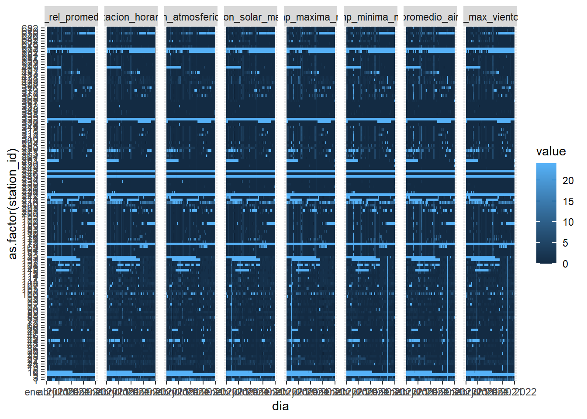

Warning: Use of bare predicate functions was deprecated in tidyselect 1.1.0.
ℹ Please use wrap predicates in `where()` instead.
# Was:
data %>% select(is.numeric)
# Now:
data %>% select(where(is.numeric))
Utilice la función para eliminar valores anómalos del set de datos agromet en todas las variables climáticas, salvo en grados_dias y horas_frio, use la función como anónima.
Función para {dplyr} (ej., mutate) con multiples columnas como argumentos
Utilizando el set de datos iris y mutate haga el calculo en que cada columna numérica sea dividida por la raiz cuadrada de el promedio de Sepal.Lenght.
Cree una función que identifique tres grupos para un vector numérico x, alto, medio y bajo. Use la función cut y rangos de igual tamaño
x <-1:100clasifica <-function(x,...){cut(x,3, labels=c('Low', 'Med', 'High'))}
Pruebe la función con un vector numérico creado por usted.
clasifica(vector1)
[1] Med High Low Med High Med Med Low Low Low Low Med Med Med Med
[16] Low Med High Low Med Med Med Med Low Med High High Med Med Low
[31] Med Low High High High Med Med Med Med Low Med Med Med Med Med
[46] Med High Med Med Med Med Med High Low Med High Med High Low Med
[61] Low Med Med Med Med Low High High Med Med High High High Med Low
[76] Low High Med Low Med High Med Med Med Med Med Low Med High High
[91] Med Med High Med High Med Med Med Med High
Levels: Low Med High
Pruebe la función utilizando summarize con el set de datos iris
Sepal.Length Sepal.Width Petal.Length Petal.Width Species
1 Low Med Low Low setosa
2 Low Med Low Low setosa
3 Low Med Low Low setosa
4 Low Med Low Low setosa
5 Low Med Low Low setosa
6 Low High Low Low setosa
7 Low Med Low Low setosa
8 Low Med Low Low setosa
9 Low Med Low Low setosa
10 Low Med Low Low setosa
11 Low High Low Low setosa
12 Low Med Low Low setosa
13 Low Med Low Low setosa
14 Low Med Low Low setosa
15 Med High Low Low setosa
16 Med High Low Low setosa
17 Low High Low Low setosa
18 Low Med Low Low setosa
19 Med High Low Low setosa
20 Low High Low Low setosa
21 Low Med Low Low setosa
22 Low High Low Low setosa
23 Low Med Low Low setosa
24 Low Med Low Low setosa
25 Low Med Low Low setosa
26 Low Med Low Low setosa
27 Low Med Low Low setosa
28 Low Med Low Low setosa
29 Low Med Low Low setosa
30 Low Med Low Low setosa
31 Low Med Low Low setosa
32 Low Med Low Low setosa
33 Low High Low Low setosa
34 Low High Low Low setosa
35 Low Med Low Low setosa
36 Low Med Low Low setosa
37 Low Med Low Low setosa
38 Low Med Low Low setosa
39 Low Med Low Low setosa
40 Low Med Low Low setosa
41 Low Med Low Low setosa
42 Low Low Low Low setosa
43 Low Med Low Low setosa
44 Low Med Low Low setosa
45 Low High Low Low setosa
46 Low Med Low Low setosa
47 Low High Low Low setosa
48 Low Med Low Low setosa
49 Low High Low Low setosa
50 Low Med Low Low setosa
51 High Med Med Med versicolor
52 Med Med Med Med versicolor
53 High Med Med Med versicolor
54 Low Low Med Med versicolor
55 Med Low Med Med versicolor
56 Med Low Med Med versicolor
57 Med Med Med Med versicolor
58 Low Low Med Med versicolor
59 Med Med Med Med versicolor
60 Low Low Med Med versicolor
61 Low Low Med Med versicolor
62 Med Med Med Med versicolor
63 Med Low Med Med versicolor
64 Med Med Med Med versicolor
65 Med Med Med Med versicolor
66 Med Med Med Med versicolor
67 Med Med Med Med versicolor
68 Med Low Med Med versicolor
69 Med Low Med Med versicolor
70 Med Low Med Med versicolor
71 Med Med Med High versicolor
72 Med Low Med Med versicolor
73 Med Low Med Med versicolor
74 Med Low Med Med versicolor
75 Med Med Med Med versicolor
76 Med Med Med Med versicolor
77 High Low Med Med versicolor
78 Med Med High Med versicolor
79 Med Med Med Med versicolor
80 Med Low Med Med versicolor
81 Low Low Med Med versicolor
82 Low Low Med Med versicolor
83 Med Low Med Med versicolor
84 Med Low High Med versicolor
85 Low Med Med Med versicolor
86 Med Med Med Med versicolor
87 Med Med Med Med versicolor
88 Med Low Med Med versicolor
89 Med Med Med Med versicolor
90 Low Low Med Med versicolor
91 Low Low Med Med versicolor
92 Med Med Med Med versicolor
93 Med Low Med Med versicolor
94 Low Low Med Med versicolor
95 Med Low Med Med versicolor
96 Med Med Med Med versicolor
97 Med Med Med Med versicolor
98 Med Med Med Med versicolor
99 Low Low Med Med versicolor
100 Med Low Med Med versicolor
101 Med Med High High virginica
102 Med Low High High virginica
103 High Med High High virginica
104 Med Med High High virginica
105 Med Med High High virginica
106 High Med High High virginica
107 Low Low Med Med virginica
108 High Med High High virginica
109 Med Low High High virginica
110 High Med High High virginica
111 Med Med High High virginica
112 Med Low High High virginica
113 High Med High High virginica
114 Med Low High High virginica
115 Med Low High High virginica
116 Med Med High High virginica
117 Med Med High High virginica
118 High High High High virginica
119 High Low High High virginica
120 Med Low High Med virginica
121 High Med High High virginica
122 Med Low Med High virginica
123 High Low High High virginica
124 Med Low Med High virginica
125 Med Med High High virginica
126 High Med High High virginica
127 Med Low Med High virginica
128 Med Med Med High virginica
129 Med Low High High virginica
130 High Med High Med virginica
131 High Low High High virginica
132 High High High High virginica
133 Med Low High High virginica
134 Med Low High Med virginica
135 Med Low High Med virginica
136 High Med High High virginica
137 Med Med High High virginica
138 Med Med High High virginica
139 Med Med Med High virginica
140 High Med High High virginica
141 Med Med High High virginica
142 High Med High High virginica
143 Med Low High High virginica
144 High Med High High virginica
145 Med Med High High virginica
146 Med Med High High virginica
147 Med Low High High virginica
148 Med Med High High virginica
149 Med Med High High virginica
150 Med Med High High virginica
Transforme la función en una función anónima (lambda) y úsela con summarize con los datos iris
# A tibble: 150 × 5
# Groups: Species [3]
Sepal.Length Sepal.Width Petal.Length Petal.Width Species
<fct> <fct> <fct> <fct> <fct>
1 Medio Medio Medio Bajo setosa
2 Medio Bajo Medio Bajo setosa
3 Bajo Medio Bajo Bajo setosa
4 Bajo Medio Medio Bajo setosa
5 Medio Medio Medio Bajo setosa
6 Alto Alto Alto Medio setosa
7 Bajo Medio Medio Medio setosa
8 Medio Medio Medio Bajo setosa
9 Bajo Bajo Medio Bajo setosa
10 Medio Medio Medio Bajo setosa
# … with 140 more rows
Utilice la función para clasificar los set de datos agromet en todas las variables climáticas, salvo en grados_dias y horas_frio, use la función como anónima.
`summarise()` has grouped output by 'station_id'. You can override using the
`.groups` argument.
data_graf_longer <- data_graf |>pivot_longer(temp_promedio_aire_nas:temp_maxima_nas)ggplot(data_graf_longer, aes(dia, as.factor(station_id), fill = value))+geom_tile() +facet_grid(.~name)

Cree un gráfico para visualizar la densidad de distribución de la precipitación acumulada diaria para las diferentes regiones de Chile. Use gráfico de densidad (geom_density)
Valores anómalos
Visualice la cantidad de NAs implicitos diarios por estación para todas las variables de los datos agromet. Utilice gráficos de tipo heatmap (geom_tile).
Visualice la cantidad de NAs implicitos diarios por sesnor y profundidad para todas las variables del set de datos ordenados de agv. Utilice gráficos de tipo heatmap (geom_tile).
cols <-sapply(api_agv,ncol)vars <-sapply(api_agv,nrow)vars_un<-unique(vars)ind7 <- vars %in%7serial_est<- agv_meta$serial[ind7]data_sep <-lapply(vars_un,function(x){ api_agv[x == vars]})a <-lapply(data_sep[[1]],function(l){ out <- l |>slice(1:3) #seleciona filas por indice o nombre out$z <-c(90,60,30)return(out)})r <-lapply(seq_along(a), function(i){ out <-tryCatch( a[[i]] |> tidyr::unnest('data') |> tidyr::hoist(3,'value')|> dplyr::select(2,3,5) ,error =function(e) NULL)if (!is.null(out)) out$serial <- serial_est[i]if (is.list(out)) out <- out |>unnest('value')return(out)})agv_final<-do.call(rbind,r)names <-c('timestamp', 'Valor', 'Profundidad', 'Serial')names ->colnames(agv_final)agv_final <-tibble(agv_final)agv_graf <- agv_final |>mutate(fecha_hora =ymd_hm(timestamp)) |>select(everything()) |>group_by(dia =as_date(fecha_hora), Serial, Profundidad) |>summarise(n =n(),NAs =sum(is.na(Valor)),NAs_prop = NAs/n)
`summarise()` has grouped output by 'dia', 'Serial'. You can override using the
`.groups` argument.
Cree un gráfico en ggplot para visualizar la variación de la temperatura media mensual para las diferentes regiones de Chile. Use tipo de gráfico scatterplot (geom_point) con barra de error (geom_error_bar).
region <- api_agromet |>group_by(station_id, dia =as_date(fecha_hora)) |>summarise(temp_prom =mean(temp_promedio_aire, na.rm =TRUE)) |>mutate(mes =floor_date(dia, '1 month')) |>left_join(agromet_meta, by =c('station_id'='ema')) |>arrange(desc(latitud))
`summarise()` has grouped output by 'station_id'. You can override using the
`.groups` argument.
region <- region[,-2] |>group_by(mes)region |>ggplot(aes(region, temp_prom, dia)) +geom_point()
Cree una visualización para la variación latitudinal de la radiación solar mensual para el año 2021 a lo largo de Chile. Use tipo de gráfico scatterplot (geom_point) con barra de error (geom_error_bar).